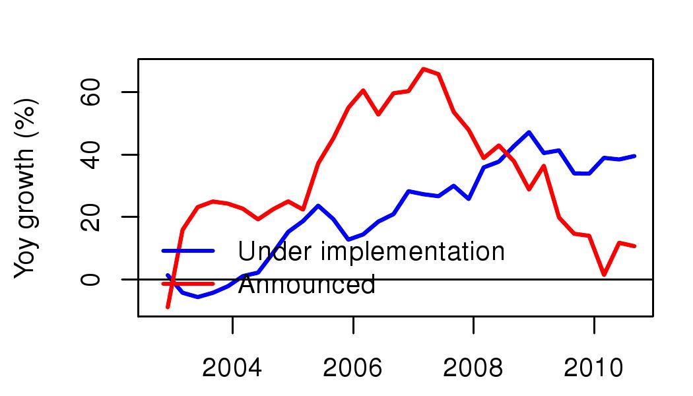
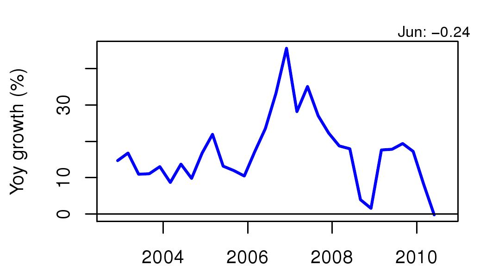
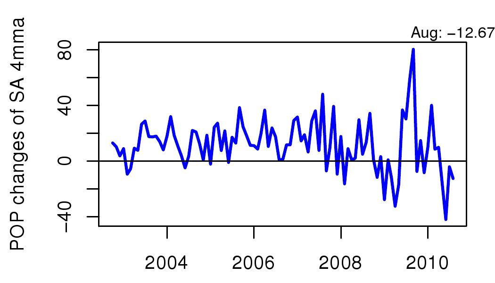

Where are all the investments going?
Financial Express, 23 October 2010
While the US and Europe are worried about a double dip recession, the Indian growth story has so far looked good. However, despite the official GDP data holding up, investment appears sluggish. Since investment has been the strongest driver of growth in recent years, this is a worrying trend. Three indicators that give us some information about how investment activity is expected to behave in coming months suggest that growth in investment may decline.

Figure 1 shows the year on year growth in new projects added in the last quarter. The data comes from the Centre for Monitoring the Indian Economy (CMIE) which has a data base (CAPEX) of all investment projects in the country. Data for the April to June quarter 2010 had shown an increase of the value of new projects, to the tune of Rs 6.2 lakh crore. In the July to September 2010 only half of that, i.e. Rs 3.2 lakh was added under new projects. This data series includes all projects proposed by the private sector and goverments (centre, state and local). One factor in the decline seems to be new projects proposed by the central government which fell from a total of Rs 14.7 lakh crore to Rs 14.4 lakh crore instead of going up, as they normally do.

While new projects of the private sector did not decline, we look towards the performance of the private sector to predict trends about investment in the coming year. One of the indicators of high investment activity in India is the corporate profits. Partly, firms are likely to extrapolate from their recent experience of profitability when making decisions about the viability of new plants. In addition, given the weaknesses of Indian finance, internal capital (retained earnings) plays a very important role in financing of investment. Figure 2 shows that growth in profits has fallen sharply to zero percent. By historical Indian standards, where a torrid pace of earnings expansion was the norm, this is unusual. Indeed what we have seen in the past has been about a 15 percent steady growth in profits year after year. During the boom when the Indian economy was overheating from 2006 to 2008, profit growth rose to 30 or above. Zero profit growth suggests a more daunting business environment, and also a reduced access to capital.

The third variable we look at is production of capital goods. This is measured by IIP capital goods which has shown some pretty sharp fluctuations in the recent period. We look at seasonally adjusted 4-month moving averages so as to avoid being influenced by month on month variation in the series. As Figure 3 shows the number is now negative.
There may be many reasons for the decline in investment. These would include a decline in demand from exports as well as the end of the fiscal stimulus. With the world in a prolonged recession, it is not surprising to find evidence that supports a double dip downturn rather than a growing robust economy.
Back up to Ila Patnaik's media page
Back up to Ila Patnaik's home page